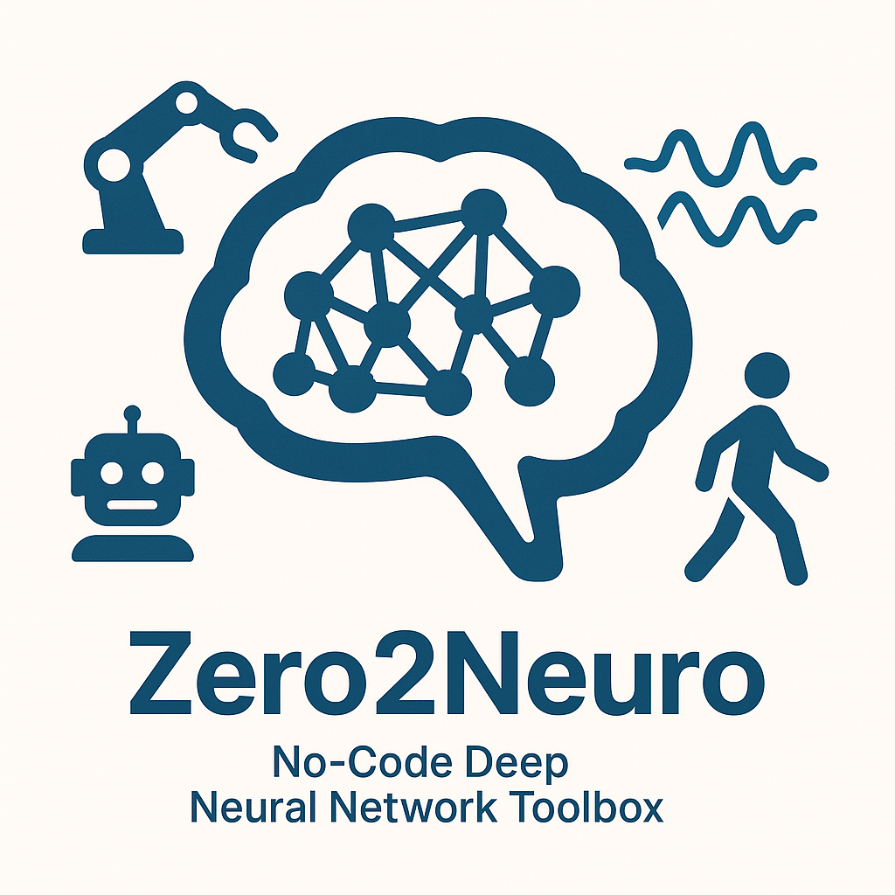

Zero2Neuro

Zero2Neuro is a no-code toolbox for constructing, training and evaluating Deep Neural Network (DNN) models for a wide range of modeling problems. This package provides easy-to-use solutions for:
-
Loading data stored in a variety of formats (including the common Comma Separated Values format), and configuring the data for use in DNN training and evaluation.
-
Creation of Deep Neural Network models from several flexible DNN model schemata, including fully-connected networks (FCNs), convolutional neural networks (CNNs), and U-Nets. The user specifies the structural details of their specific model.
-
A standard DNN training and evaluation engine. This engine supports the production of result reports in various formats, including hooks for Weights and Biases.
Supported Environments
You can execute Zero2Neuro in several different environments, depending on your needs:
- Bash shell command line
- Supercomputer using SLURM
- Jupyter Notebooks
Flexible Configuration
The user specifies the details behind their specific DNN experiment using a set of simple configuration files:
- Data configuration includes:
- Location of data files and their type
- Individual data features to be extracted from the files that capture the model inputs and desired outputs
- Translation of data types for categorical variables, including one-hot encoding
- Creation of training, validation, and testing data sets
- Model configuration includes:
- Model schema
- Form of the model inputs
- Number and sizes of model layers
- Non-linearities for hidden and output layers
- Training/evaluation engine configuration includes:
- Learning parameters
- Loss functions and metrics
- Early-stopping parameters
- How experiment results are reported
Detailed Example
The Full Example demonstrates the configuration and execution process for solving a simple logic problem.
Dependencies
Zero2Neuro is implemented in Python and built on top of Keras3. A full set of machine-readable dependencies is available for download